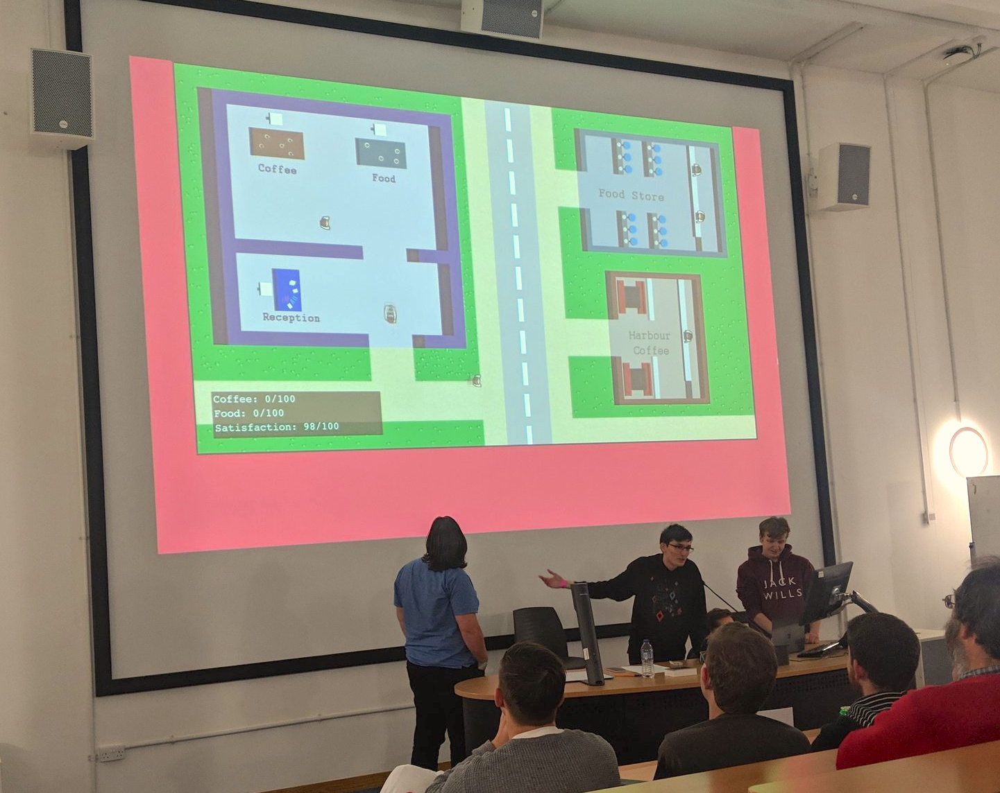
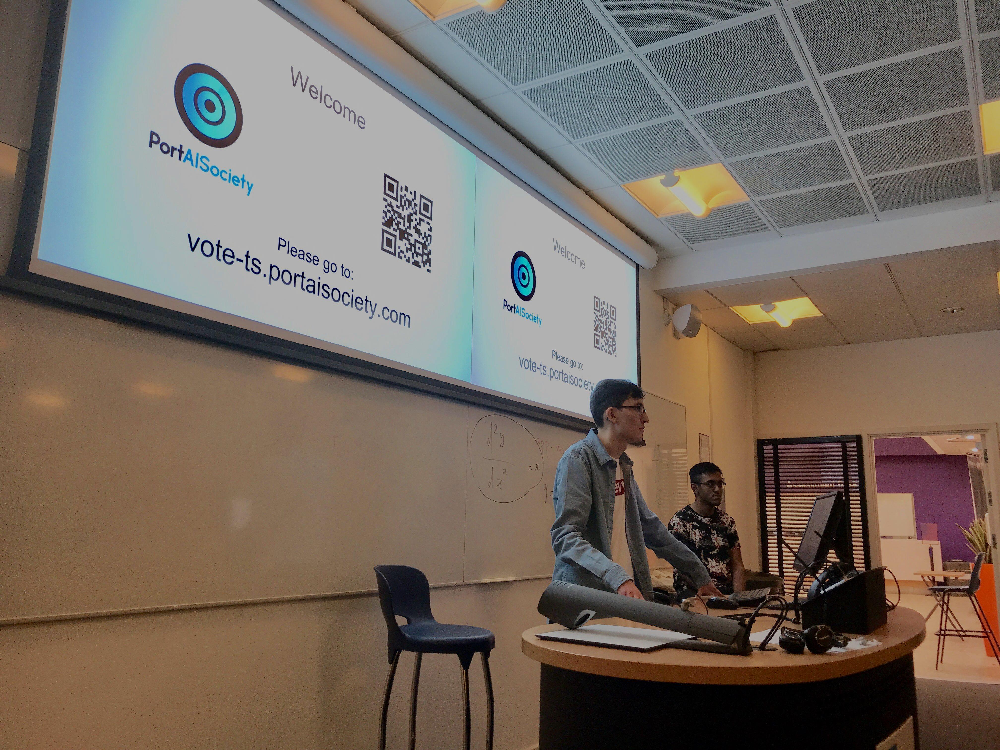
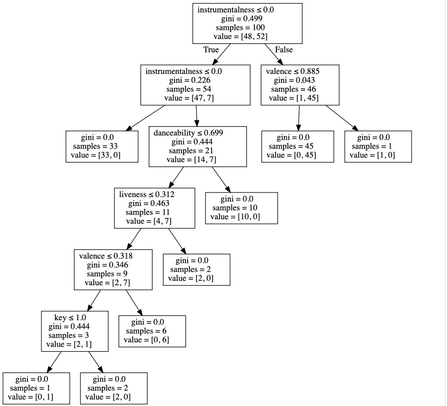
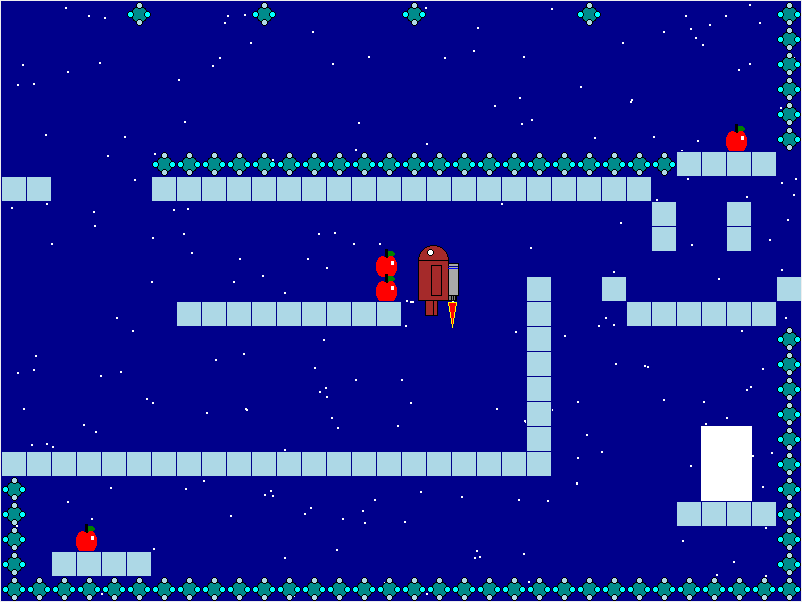
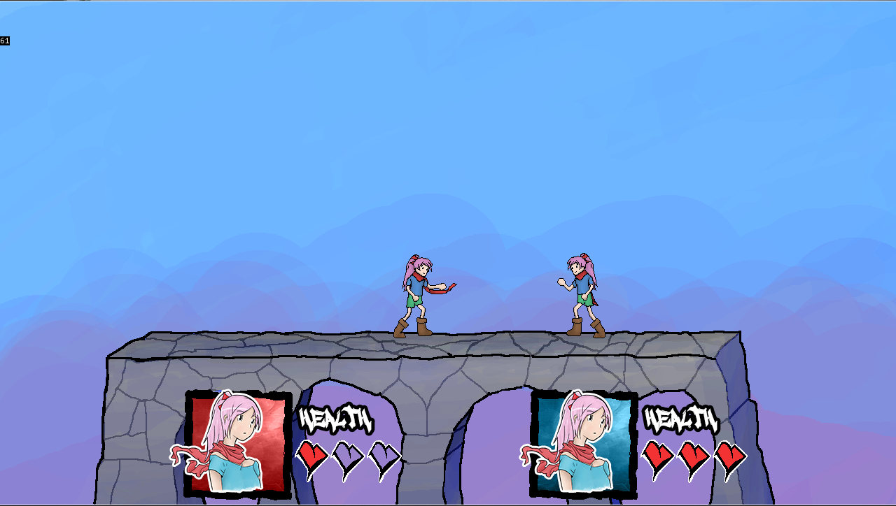

[~]$./Projects.sh
Hack Pompey The Game
We participated as a group to the Hack Pompey, which is a Hackathlon held every year at Portsmouth University. My team consisted of Sam Mercer, Mathew Hopson, Matus Minarovic and me.
We decided to create a game, and what better game for the hackathlon than the hackathlon itself.
The idea was that the player had to prepare Hack Pompey all by themself, so they will have to fill the stands with food and coffee while at the same time register the participants. If the player took too long, then the customer satisfaction would drop.
This was the first stage in the game. We had initially planned the game to have 3 stages, but we didn't had time to implement all of it.
Startpage
A simple start page with links to my most used websites.
This is the third version which uses both grid and flex.
Ez-Translate - First Prize

In this competition our task was to design, program and present an application for the Kyocera Multi Functional Printer.
The printer ran java with a proprietary API and the interface used html+css.
Our idea was to create a translator for the printer. So users could scan, import from USB/PC or from the cloud and then that document would get parsed translated and then printed back keeping the same format as before.
PortAISociety
This society first started as a club the 2017, it was ran by Dr Farzard, a lecturer at Portsmouth University. The goal of the club was for students to involve themself with AI and Machine Learning since there was no course about these topics at that time.
We had a couple of sessions but since Farzard was really busy teaching we couldn't have as many sessions as we would have wished for.
Muklek and me then decided to take control of the club, rebrand it and turn it into a official society so that its accessible to all the students from every course.
This meant we had to redesign the session structure, so we decided to hold different types of session; technical, non-technical, workshops and debates.
Song Rater
Opye and me volunteered to present at the Artificial Intelligence Club at the Portsmouth University. Our task was to teach the club about decision trees, how they are applied in the real world and program one.
I was in charge of the programming, so I decided to make a music recommendation system for Spotify. I used sklearn and Jupyter Notebook to make it more visually appealing for the presentation.
The data set was gathered using the Spotify api. The liked songs come from my top played songs, and the disliked songs from a playlist I made for this project.
Astrodroid
This game was programmed for a competition at Portsmouth University between first years.
The goal was to adapt a half finished game created by the lecturer and expand it into something interesting.
The challenging part was that we couldn't use classes and we had to use the graphics.py library we where given.
I decided to make an android with a jet-pack with the goal of getting to the exit while catching as many apples as possible.
Touching a mine (those weird blue things) would make the android explode.
RankBusters
I programmed this game for my A-Level CS Coursework and designed the art for my A-Level Graphics coursework.
The game was inspired by SmashBros and the art by The World Ends with You. Which are some of my favourite games.
Its programmed in Monkey X and the only reason for that is because our teacher at that time thought that using an obscure language would mean higher grades as the examiner would struggle to understand the code.